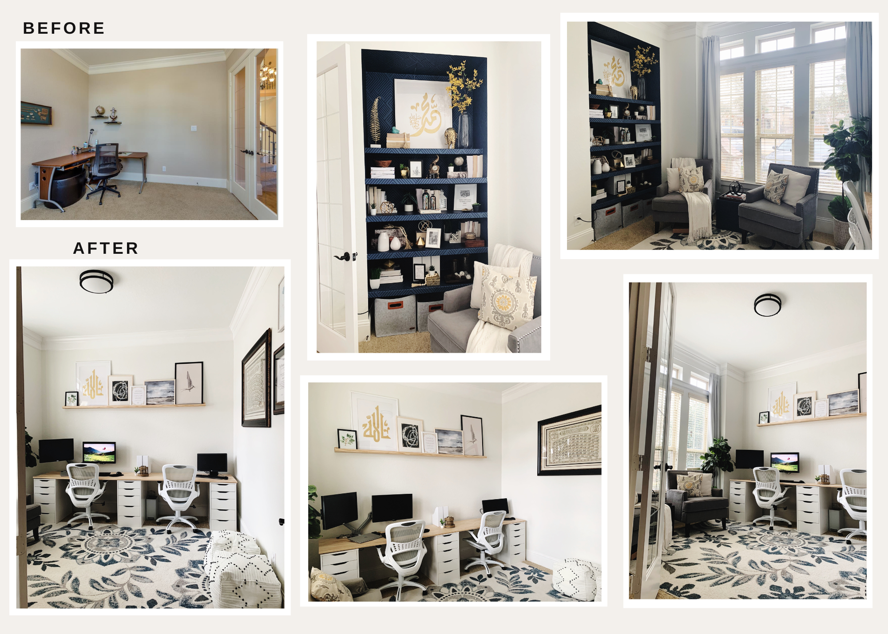
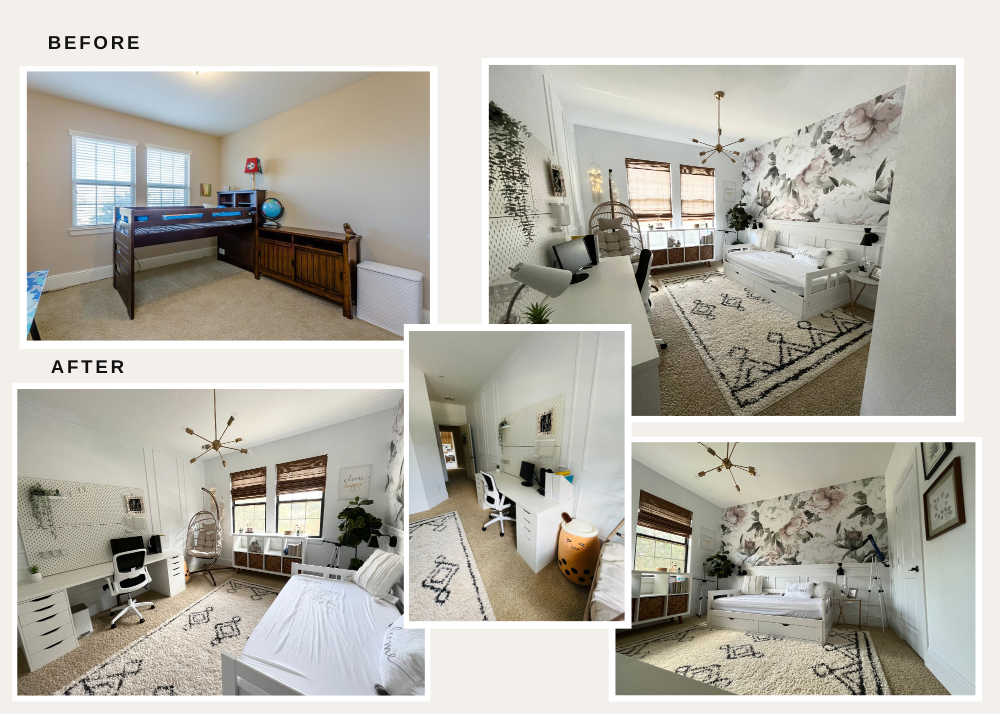
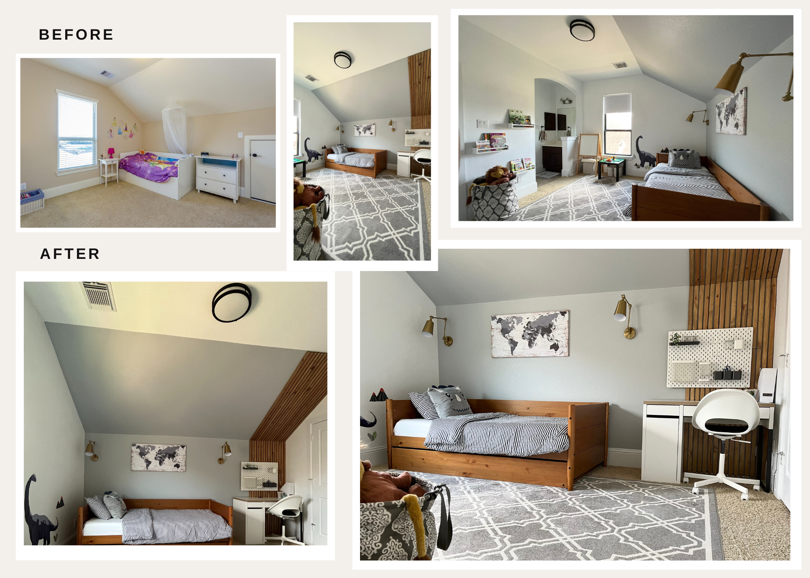

So, in the middle of all this pandemic chaos, my fam decides to switch houses. I had big plans for my office, but then I stumble upon DIY guru "Fariha" on Insta (@pennies_for_a_fortune). Turns out, she's redoing her office too, and her stuff is pure inspiration. So, I scrap my original office setup and go full DIY mode. Picked up some wood, went DIY crazy with a picture ledge and desk top. I take credit for the first four pics on the left – even my nine-year-old rocked one. Got a special middle pic, an Urdu poem by my mom at 18. Toughest part? Wallpapering the shelves, but I conquered it. Also took a cheap ceiling light from Sam's club, sprayed it matte black, and it's now a winner. And hey, spot the printer challenge – go for it!
For my second project, I tackled my daughter's room. She was all about wallpaper, but I wanted to try wall paneling. In the end, I blended both looks. Wall paneling seemed tricky initially, but YouTube helped. I even treated myself to a Graco Magnum X5 paint spray for two rooms. Turning my black IKEA furniture white was the real test, but I pulled it off. Oh, and take a guess: some of those white pieces were originally black! Had a few hiccups too. Swapped out a bulky bed for a sleek 3-in-1 twin. Goal was more space for a reading nook, study area, bookshelf, and that twin bed. Lucky me, everything clicked, and my daughter's loving her new room.
Moving on, I tackled my son's room with two big issues: hiding a garage roof door and a tight budget. Kudos to my hubby for the slat idea to cover the door. Instead of store-bought, I took on cutting our own with a table saw, overcoming initial nerves. Lesson learned: fear's a buzzkill until you face it. Slats got a matching look for the twin daybed. Got resourceful, using leftover paint and a rug I had, plus snagged a sale daybed, affordable Amazon wall lights, and safe puck lights for my kid. Also DIY-ed the ceiling light. IKEA study set, world map, and wall shelves sealed the deal – room success!
